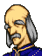

第2章Turmoil in Agustria
Scenes (64)
- ワールドマップ
- オープニング（ノディオン）
- オープニング（アグスティ）
- オープニング（ノディオン）
- オープニング（ハイライン）
- オープニング（エバンス）
- 1ターン目のハイライン軍フェーズ
- 1ターン目のハイライン軍フェーズ（アンフォニー）
- 1ターン目のハイライン軍フェーズ（マッキリー）
- 闘技場で初めて直接攻撃系レベル7の対戦相手を撃破したとき
- 会話（エスリン→ディアドラ）
- 会話（シグルド→ラケシス）
- 会話（デュー→ラケシス）
- アーダンがハイライン南の砂浜で待機したとき
- マップ右方のマッキリー兵の右側に待機したとき
- エリオット初戦時
- エリオット撃破時
- フィリップ初戦時
- フィリップ撃破時
- ボルドー初戦時
- ボルドー撃破時
- ハイライン城制圧時
- ハイライン城制圧直後のアンフォニー軍フェーズ（アンフォニー）
- ハイライン城制圧直後のシグルド軍フェーズ
- レヴィン登場直後のアンフォニー軍フェーズ
- ベオウルフ登場直後のシグルド軍フェーズ
- 会話（キュアン→フィン）
- 会話（シグルド→レヴィン）
- 村訪問（マップ左上）
- 村訪問（マップ左上から1つ右）
- 村訪問（マップ右上から1つ左）
- 村訪問（マップ右上）
- 村訪問（マップ右）
- 村訪問（マップ左下）
- 村訪問（マップ左下から1つ右）
- 村訪問（マップ左下から2つ右）
- 村訪問（マップ中央下）
- 村訪問（マップ右下）
- ベオウルフ初戦時
- ベオウルフ撃破時
- 会話（シグルド軍ユニット→ベオウルフ）
- ヴォルツ初戦時
- ヴォルツ撃破時
- マクベス初戦時
- マクベス撃破時
- アンフォニー城制圧時
- アンフォニー城制圧直後のアグスティ軍フェーズ（マッキリー）
- アンフォニー城制圧直後のアグスティ軍フェーズ（アグスティ）
- 会話（シルヴィア→シグルド）
- 会話（アレク→シルヴィア）
- 会話（ベオウルフ→ラケシス）
- フュリー初戦時
- フュリー撃破時
- 会話（レヴィン→フュリー（アグスティ軍））
- 会話（フュリー（シグルド軍）→シグルド）
- クレメント初戦時
- クレメント撃破時
- マッキリー城制圧時
- マッキリー城制圧直後のアグスティ軍フェーズ（アグスティ）
- ザイン初戦時
- ザイン撃破時
- シャガール初戦時
- シャガール撃破時
- アグスティ城制圧時
ワールドマップ
ヴェルダン王国を制圧したシグルドは、
バーハラ城からの命令に従ってSigurd, who had subdued the kingdom of Verdane, followed the orders from Belhalla Castle
国境の城、エバンスの城主となり、
ディアドラを妻にむかえた。and became lord of the border castle of Evans, taking Deirdre as his wife.
グランベルによるヴェルダン制圧は
アグストリアに大きな混乱をもたらした。Grannvale's subjugation of Verdane brought great turmoil to Agustria.
アグストリアの諸公たちは、
強い反グランベルの意思を示しThe lords of Agustria showed a strong will to oppose Grannvale,
あくまでも和平を重んじた
アグストリアの賢王イムカはand the wise King Imuka of Agustria, who valued peace above all,
何者かの手によって暗殺された。was assassinated by an unknown hand.
代わって国を継いだのは
イムカ王の長子、シャガール王子だった。The one who succeeded to the throne in his place was King Imuka's eldest son, Prince Chagall.
グランベルの国軍は
いまだ、はるか東のイザークにある。Grannvale's royal army was still far away in the east, in Isaach.
シャガールはアグストリアの諸公に
ヴェルダン侵略の命をくだした。Chagall ordered the lords of Agustria to invade Verdane.
エバンス城を守るシグルドは
再び、戦いの真っただ中に立たされた。Sigurd, guarding Evans Castle, once again found himself in the thick of battle.
オープニング（ノディオン）

ラケシス、俺はアグスティへむかう
おろかな挙兵などやめるよう
シャガール王におねがいするLachesis, I'm going to Agusty to ask King Chagall to call off this foolish uprising.

お待ちください、兄上！
シャガール王は
ご自分のお父上すら手にかけたお方、Please wait, brother! King Chagall is a man who laid hands on even his own father,
そんな方に、何を言ってもムダです
それどころか兄上の身すら危険ですWhatever you say to someone like that is pointless. Worse, even your own life would be in danger.
ラケシス、めったなことを言うな
シャガール様が前王を暗殺したという
うわさは俺もきいたLachesis, don't say such reckless things. I too have heard the rumor that Lord Chagall assassinated the former king.
しかし証拠があるわけではない
あきらめずにご説得もうしあげれば
王もきっとわかってくださると思うBut there's no proof of it. If I keep trying to persuade him without giving up, I believe the king will surely understand.
しかし・・・But...
もうなにも言うな、Say nothing more.
万が一の時の為に
この城には俺がもっとも信頼する
三人の部下を残して行くIn case the worst happens, I'll leave the three retainers I trust most behind at this castle.
ラケシス、そんな悲しそうな顔をするな
大丈夫だ、俺は必ず帰ってくる
おまえをおいて死にはしないLachesis, don't make such a sad face. It'll be fine—I'll definitely come back. I won't die and leave you behind.
エルト兄様・・・Brother Elt...
(エルトシャンがアグスティ城に向かう)
オープニング（アグスティ）
シャガール陛下、
どうか挙兵はおやめ下さいYour Majesty Chagall, please call off this uprising.
陛下のお父上は、グランベルとの共存を
願っておられましたYour father wished for coexistence with Grannvale.
戦争は民をくるしめ、
陛下のおなまえまで
おとしめることになりますWar will only make the people suffer, and it will tarnish even your own name, Majesty.
戦争だけはしてはならぬのです！！War is the one thing you must not wage!!

ノディオンのエルトシャンか、きさま、
父上に可愛がられていたのをよいことに
今まではさんざんわしにたてつきおってEldigan of Nodion, is it. You, taking advantage of being doted on by my father, have defied me endlessly until now.
だがな・・・父上は死に、
今ではわしが
全アグストリアの支配者なのだBut... Father is dead, and now I am the ruler of all Agustria.
今までわしをコケにしてきた礼は
たっぷりとさせてもらう
誰か、こやつを地下牢にぶちこめ！I'll make you pay in full for all the times you made a fool of me. Someone, throw this man in the dungeon!
ま、待って下さい！ シャガール陛下・・・！！W-wait, please! Lord Chagall...!!
ふっ、エルトシャンめ、めざわりな奴だ
よし、ハイラインのボルドーに
ノディオン攻略を命じよHeh, that Eldigan, what an eyesore. Right, order Bordeaux of Heirhein to conquer Nodion.
それがすみしだい
全軍でグランベルに進撃するOnce that's done, we'll march on Grannvale with our full forces.

・・・シャガール陛下、
やっとご決心されましたな...Lord Chagall, you've finally made up your mind.
マンフロイか、きさまの言うとおり
父上はこの手で暗殺したManfroy, is it. Just as you said, I assassinated my father with my own hands.
もはやあともどりはなるまい
しかし本当に勝てるのだろうなThere's no turning back now. But can we really win?
グランベルは
アグストリアとの不戦条約を信じて
全軍でイザークへ遠征中だGrannvale, trusting the non-aggression pact with Agustria, has sent its entire army on campaign to Isaach.
いま攻め込めば必ず勝てるでしょうIf we attack now, we will surely win.
むむっ、そうか
グランベルさえ倒せば
アグストリアが世界の支配者になれるMm, I see. If we can just defeat Grannvale, Agustria can become the ruler of the world.
そうすれば、わしが皇帝になれるのだなAnd then, I could become emperor.
ふぉふぉふぉ・・・
・・・そうなる事をゆめみていなされ・・・・・Fo fo fo... Do dream of such a thing happening...
オープニング（ノディオン）

ラケシス様！ エルトシャン王が
アグスティでとらわれたとの報告が！Lady Lachesis! There's a report that King Eldigan has been captured in Agusty!
えっ、兄上が！？
ああっ・・・だからあれほど
おとめしたのに・・・What, brother!? Ahh... that's why I tried so hard to stop him...
姫様、心配なのは
それだけではありません
隣国ハイラインには注意すべきですPrincess, that's not the only worry. We should be wary of our neighbor, Heirhein.
王が不在と知れば
いつ攻めてくるかもしれませんIf they learn the king is absent, they might attack at any time.
ヤツらはヴェルダンでの戦いを
根に持っているでしょうし、
特にエリオット王子は・・・They likely still hold a grudge over the fighting in Verdane, especially Prince Elliot...
エリオットは
私が彼のいいなりにならないから
腹をたてているのねElliot is angry because I won't do as he says.
でもあんなキザな男は、大きらい！
私はエルト兄様のような人でなければ
すきにはなれないわBut I absolutely hate a conceited man like that! I couldn't fall for anyone unless he's like my brother Elt.
だから、だれの妻にもならない・・・That's why I won't become anyone's wife...
・・・それはよろしいのですが
王直属のクロスナイツも
今は北のシルベールの砦に駐留しており...That's all well and good, but the King's own Cross Knights are currently stationed at Silesse Fort to the north,
この城には
わずかな兵しか残っていませんand only a small number of soldiers remain at this castle.
私は弟二人とともに
全力でお守りしますが
もしものときは、お覚悟くださいMy two younger brothers and I will protect you with all our strength, but please be prepared, just in case.
わかっています
イーヴ、あなたには感謝しているの
でも無理はしないで、死んではだめですI understand, Eve. I'm grateful to you. But please don't push yourself too hard—you mustn't die.
エヴァ、アルヴァにも
ラケシスがあやまってたと伝えてねEva, please tell Alva too that Lachesis is sorry.
もったいないお言葉Those words are more than we deserve.
・・・しかしながら、我々はエルト王から
特にえらばれて、姫様をお守りするよう
おおせつかったのです...However, we were specially chosen by King Elt and entrusted with protecting you, Princess.
我々も栄光あるノディオンの聖騎士
この一命にかけても
最期まで姫様をお守りいたします！We too are glorious Holy Knights of Nodion. We will protect you to the very end, even at the cost of this life!
(ノディオン城から、ラケシス、イーヴ、エヴァ、アルヴァが登場)
オープニング（ハイライン）

なに？ あのエルトシャンが
陛下のお怒りをかって、
地下牢にほうりこまれただと！？What? That Eldigan incurred His Majesty's wrath and was thrown into the dungeon!?
よし！ エリオット！
このすきに、ノディオンを攻め落とすのだ
エルトシャンに、吠え面かかせてやれ！Good! Elliot! Take this chance to conquer Nodion. Make Eldigan cry out in defeat!

かしこまりました、父上Understood, Father.
(ハイライン城から、ボルドー、エリオット、フィリップ率いるハイライン軍が登場)
オープニング（エバンス）
シグルド様、大変です！
エルトシャン様がアグスティ城に囚われ
ノディオンが攻撃されているとの事ですLord Sigurd, it's terrible! Lord Eldigan has been imprisoned in Agusty Castle, and Nodion is under attack!
ラケシス王女から
援軍を請う書状がまいりましたA letter has arrived from Princess Lachesis requesting reinforcements.

エルトシャンが！？
なぜだ、あれほどの男が・・・Eldigan!? Why—a man like him...
わかった、
とにかくノディオンに出陣しようUnderstood. In any case, let's march out to Nodion.
ラケシスだけは、私が一命にかえても
守らねばならないI must protect Lachesis at the very least, even at the cost of my own life.
エルトシャンは口にこそださなかったが
あの姫をずっと大切にしてきたEldigan never said it aloud, but he has always cherished that princess.
ラケシスを失えば
彼はどれほど嘆き悲しむ事か・・・If he were to lose Lachesis, how deeply he would grieve...

シグルド様、また戦いが始まるのですかLord Sigurd, is another battle beginning?
ディアドラ、すまない
だが、私は
エルトシャンに多くの借りがあるDeirdre, I'm sorry, but I owe Eldigan a great deal.
不安な思いをしている彼の妹を
見捨てるわけにはいかないのだI cannot abandon his sister while she's in such distress.
はい、わかっています
とめはしません
でも、私も一緒に行きますYes, I understand. I won't stop you. But I'm coming with you too.
えっ、それはだめだ
きみを危険なめに会わせたくないWhat, that's no good. I don't want to put you in danger.
シグルド様は約束して下さいました
絶対わたしを離さないって
わたし・・・不安なのです・・・Lord Sigurd, you promised me you'd never let me go. I... I'm anxious...
・・・・・あなたと離れれば
二度と会えなくなるような気がして・・・
おねがいです、どうか私もおそばに・・・...If I were apart from you, I feel like we might never meet again... Please, let me stay by your side...
ごめん・・・そうだったね
わかった、一緒に行こう
でも私の側を離れてはだめだよI'm sorry... that's right, I did promise. All right, let's go together. But you mustn't leave my side.
はい！ シグルド様Yes! Lord Sigurd.
1ターン目のハイライン軍フェーズ
ノディオンのラケシス姫か
あの生意気な女めPrincess Lachesis of Nodion, is it—that insolent woman.
あいつには、
いつも恥をかかされてきたが
・・・今度こそ見ていろよShe's always humiliated me, but... just watch this time.
これだけの大軍に包囲されては、
さすがのラケシスも、いやとは言えまいSurrounded by an army this large, even Lachesis can't refuse.
ハイラインに連れ帰って、
むりやりにでも俺のものにしてやるI'll take her back to Heirhein and make her mine, even by force.
(エリオット率いるハイライン軍が進撃開始)

我々の役目は城を守ることだ、いいな！
目先の敵にまどわされるな
自分の持ち場を死守せよ！Our duty is to defend the castle, understood! Don't be distracted by the enemy in front of you—hold your position to the death!
1ターン目のハイライン軍フェーズ（アンフォニー）

そうか、
ついにハイラインが兵をあげたかI see, so Heirhein has finally raised its army.
よし、手はず通り
やとった盗賊どもに村をおそわせろGood, as planned—have the bandits we hired raid the village.
先王の時代は
手出しもできなかったが
シャガール様ならごまかすのもたやすいUnder the former king we couldn't lay a hand on it, but with Lord Chagall, it's easy to get away with.
村の財産は残らず巻きあげて
城に持ち帰るのだ！Seize every last bit of the village's wealth and bring it back to the castle!
(村の周辺にアンフォニー軍が登場)
1ターン目のハイライン軍フェーズ（マッキリー）

ハイラインがノディオンを攻撃すると？
ううむ・・・・・・どちらにつくのが得か・・・Heirhein is going to attack Nodion? Hmm... which side would it profit me to take...
決着を確かめてからでも
おそくはあるまい、一兵たりとも動かすな
このまま様子を見るのだIt won't be too late to wait and see how it's settled. Don't move a single soldier—let's just watch for now.
闘技場で初めて直接攻撃系レベル7の対戦相手を撃破したとき
・・・今まで一度も
敗れたことがない俺を倒すとは・・・
おまえ・・・いったい何者なのだ...To think you've defeated me, who has never once lost before... Just who are you?
おまえの戦いには気迫がこもっていた
たぶん、なにか信じるもののために
戦っているのだろうThere was real spirit in the way you fought. You're probably fighting for something you believe in.
俺は今まで金のためだけに戦ってきた
・・・・・・・だが、お前を見て、
それもむなしくなったUntil now I've only fought for money... but seeing you, that's started to feel empty.
よければ、俺もお前達とともに戦いたい
何か大きな目的のために
この剣を使いたいのだIf you'll have me, I want to fight alongside you too. I want to use this sword for some greater purpose.
(ホリンがシグルド軍に加わる)
(以降、直接攻撃系レベル7の対戦相手が変更される)
会話（エスリン→ディアドラ）

ディアドラ様、おけがはありませんか？
兄上は、お姉さまのことを、
とても心配していましたLady Deirdre, are you unhurt? My brother was very worried about you.
エスリン様・・・
ありがとう
わたしなら大丈夫ですLady Ethlyn... thank you. I'm fine.
わたしは
シグルド様と一緒にいられることが
うれしいのですI'm just happy to be able to be with Lord Sigurd.
あなたのような、やさしい人に愛されて
兄上は幸せですねMy brother is lucky to be loved by someone as kind as you.
エスリン様、
あなたに差し上げたいものがあります
どうぞこれをお持ち下さいLady Ethlyn, there's something I'd like to give you. Please take this.
えっ・・・あっ、これは光の剣！？
・・・こんな大事なものを
私にくださるのですか？Huh... oh, this is the Sword of Light!? You're giving me something this important?
はい、少しはお役にたつと思いますYes, I think it'll be of some use to you.
ありがとう、ディアドラ様！
私の宝物にいたします！Thank you, Lady Deirdre! I'll treasure it!
(「ひかりの剣 をてにいれた！」)
会話（シグルド→ラケシス）
シグルド様！
たすけに来て下さったのですね
よかった、一時はどうなることかと・・・Lord Sigurd! You've come to help us. Thank goodness—for a moment I didn't know what would happen...
ラケシス、無事でよかった
エルトシャンは、
まだ捕えられたままなのか！？Lachesis, I'm glad you're safe. Is Eldigan still being held captive!?
はい、兄はまだアグスティに・・・・・・
アグストリアの諸公は、
すべて敵になってしまいましたYes, my brother is still in Agusty... All the lords of Agustria have become our enemies.
シグルド様、
どうか私に力をお貸しくださいLord Sigurd, please lend me your strength.
なんとしても、
兄を救い出さなければ・・・・！I must rescue my brother, no matter what...!
わかっている
他国に軍を入れることは気が進まないが
今度ばかりはやむをえないだろうI understand. I'm reluctant to bring my army into another nation, but this time it can't be helped.
グランベル王にはすでに許しをえた
シャガール王子が
父親であるイムカ国王を暗殺しI've already obtained permission from the King of Grannvale. Prince Chagall assassinated his own father, King Imuka,
グランベルに
攻撃をしかけようとしていたとの情報も
王はすでにご存じだったand the king already knew the information that he was planning to attack Grannvale.
王は、和平派のエルトシャンを
救出することはグランベルとしても
必要だとおおせられ、The king declared that rescuing Eldigan, a man of peace, was also necessary for Grannvale,
私にその役目をおおせつけられた
ラケシス、エルトシャンは
私が必ず助け出す・・・・・心配するなand entrusted me with that duty. Lachesis, I will definitely rescue Eldigan... don't worry.
会話（デュー→ラケシス）
※デュー、ラケシスともに恋人がいない場合のみ[Only if both Dew and Lachesis have no sweetheart]

ラケシスさん、探していたんだよ
面白い剣を見つけたから、
ラケシスさんにあげようと思ってさLachesis, I've been looking for you. I found an interesting sword, and I thought I'd give it to you.
まあ、本当、変わった剣ね
初めて見るものだけど・・・Oh my, really, what an unusual sword. I've never seen one like it...
盗賊の剣ってところさ
これで悪い奴らをやっつけてよIt's a thief's sword, I suppose. Use it to beat up bad guys.
うれしいけど・・・でも、
私がいただいてもいいのかしら？
デューは使わないの？I'm happy, but... are you sure I should take it? Won't you use it, Dew?
いいって、気にしないでよ
おいらが使ったところで、
あんまり意味がないんだ・・・It's fine, don't worry about it. It wouldn't mean much even if I used it myself...
へへ、まあとにかく、役に立つ剣だよ！
じゃあねっHeh heh, well anyway, it's a useful sword! See ya!
(「とうぞくの剣 をてにいれた！」)
(デューとラケシスの恋愛値+50)
アーダンがハイライン南の砂浜で待機したとき

・・・ああ、さびしい・・・・・
俺はこんなに固くて強いのに、
みんなで俺をバカにして・・・...Ah, I'm so lonely... I'm this tough and strong, and yet everyone makes fun of me...
せめてアレクみたいに再攻撃できれば
もう少しは働けるのになぁ・・・If only I could get a follow-up attack like Alec, I could pull my weight a bit more...
そしたら俺にも
彼女ができるかもしれんのになぁ・・・
ハァ・・・男はつらいぜThen maybe I could get a girlfriend too... *sigh*... being a man is hard.
ん？ 何だこの古びたうでわは？
なにか魔法のうでわみたいだが、
ちょっとつけてみようHm? What's this old bracelet? It looks like some kind of magic bracelet—let me try putting it on.
ん・・・むむ・・・！
な、なんだこの感じは！
おおっ、俺にも追撃の力が・・・Hm... mmm...! Wh-what is this feeling!? Ohh, now even I have the power to follow up...
(「ついげきリング をてにいれた！」)
マップ右方のマッキリー兵の右側に待機したとき
ふぁ～、こんな山んなかに一人なんて
やってらんないぜHaah~, being alone in mountains like these, I just can't stand it.
いくらこの先に
わが軍の誇るシューター・・・むっ！No matter how much our army's prized Shooter up ahead... hm!
人の気配！！
気のせいか・・・・Someone's there!! ...Or is it just my imagination...
エリオット初戦時
※ラケシスと戦った場合[If fought against Lachesis]
ラケシス姫、
いいかげんにあきらめたらどうだ
俺の妻になるなら命だけは助けてやるぞPrincess Lachesis, why not just give it up already. If you become my wife, I'll spare your life at least.
よらないで！ 汚らわしい！！
あなたの妻になるくらいなら
死んだ方がましです！Don't come near me! You disgust me!! I'd rather die than become your wife!
※その他のユニットと戦った場合[If fought against any other unit]
げっ・・・
なぜグランベル軍がここに！Ugh... why is the Grannvale army here!
こうなったら
まとめて片付けてやる！Since it's come to this, I'll clean you all out at once!
エリオット撃破時
ちくしょう・・・なぜいつも
エルトシャンばかりが・・・Damn it... why is it always Eldigan...
フィリップ初戦時
グランベルめ・・・
私が生きているかぎり、
ハイライン城へは行かせぬ！Grannvale, damn you... as long as I live, I won't let you reach Heirhein Castle!
フィリップ撃破時
ボルドー様・・・
・・・お許しください・・・Lord Bordeaux... please forgive me...
ボルドー初戦時
なにっ、グランベル軍だと！？
くそう・・・どいつもこいつも
役たたずどもめ！What, the Grannvale army!? Damn it... every last one of them useless!
こうなったら、ワシが相手だ！Since it's come to this, I'll be your opponent myself!
ボルドー撃破時
うう・・・ワシの城が・・・・・・Ugh... my castle...
ハイライン城制圧時
シグルド様
ようやくハイラインを制圧できました
これからどうしますか？Lord Sigurd, we've finally managed to subdue Heirhein. What will we do now?
うむ、当面の危機は去ったIndeed, the immediate crisis has passed.
しかしエルトシャンは
まだアグスティにとらわれたままだ
それに・・・But Eldigan is still being held captive in Agusty. And besides...
それに？Besides?
中央の森にある開拓村が
盗賊達におそわれているそうだ
できることなら助けたいI hear a settlers' village in the central forest is being attacked by bandits. I want to help if I can.
そうですね
私達が侵略者でないことを示すためにも
人々を助けることは必要だと思いますIndeed. To show that we aren't invaders, I think it's necessary to help the people.
そうと決まったなら
すぐにまいりましょうIf that's decided, let's head out right away.
グズグズしていては
手おくれになります！If we dawdle, it'll be too late!
(「ハイライン城を せいあつした！」)
ハイライン城制圧直後のアンフォニー軍フェーズ（アンフォニー）
バカ者め！ 貴様が欲を出している間に
ハイラインが奪われたではないか！You fool! While you were busy being greedy, Heirhein was taken from us, wasn't it!
この不始末、
どう責任をとるつもりだ、マクベス！How do you intend to take responsibility for this mess, Macbeth!
ひいいっ、
お許しください、シャガール様！Eeek, please forgive me, Lord Chagall!
今すぐ、
ヴォルツの傭兵軍団を出撃させますI'll have Volts's mercenary corps sortie right away.
(アンフォニー城から、ベオウルフ、ヴォルツが登場)
ちっ、出撃命令か
まあしかたねぇなTch, a sortie order, huh. Well, can't be helped.
だが俺達から行くこともあるまいよ
戦闘がはじまるまで
この場所で様子を見ようBut there's no need for us to go charging in either. Let's wait here and watch until the fighting starts.
おい、ベオウルフ、貴様はどうする？Hey, Beowolf, what'll you do?
今度ばかりは、気が乗らねえなあ
あのマクベスとか言う野郎、気にくわねぇ
そろそろ別の雇い主でも探そうと思うThis time I'm just not feeling it. That Macbeth guy, I don't like him. I think it's about time I found myself a different employer.
好きにしな、俺たち傭兵は自由きまま
だれに仕えようとかまわねぇSuit yourself. We mercenaries are free as we please—it doesn't matter who we serve.
今日は仲間でも明日は敵同士
それもまた面白いじゃねえかComrades today, enemies tomorrow—isn't that interesting too?
そうだな
しかしあんたとは戦いたくないぜ
俺じゃ、とても勝ち目はないからなTrue enough. But I don't want to fight you—I wouldn't stand a chance.
ふっ、俺をやれるヤツはいねぇよ
この世界ひろしと言えどもな・・・Heh, there's no one who can take me down, not in this whole wide world...
(ベオウルフ、ヴォルツがマップ中央上端に向かう)
(マップ中央上端にベオウルフ、ヴォルツ率いるアンフォニー軍が登場)
(アンフォニー城から、マクベス率いるアンフォニー軍が登場)
ハイライン城制圧直後のシグルド軍フェーズ

村長、なんかさわがしいけど
どうしたんだVillage chief, something seems like a commotion—what happened?
あ、旅の吟遊詩人さんだね
あんたも早く逃げる用意をしなさい
盗賊団がおそってくるんだOh, you're the traveling bard. You should hurry and prepare to flee too—a band of bandits is coming to attack.
盗賊？ アグストリアの軍隊は
守ってくれないのかBandits? Won't Agustria's army protect you?
この国は今、内乱状態で
我々の事なんて
かまってるひまはないのさThis country is in a state of civil war right now—there's no time to worry about the likes of us.
いや、それどころか
盗賊をあやつっているのはNo, in fact, the one controlling the bandits—
アンフォニー王だってうわさも
あるくらいだよ—there's even a rumor that it's the lord of Amphony himself.
それはひどい話だな、よしわかった
俺がちょっくら出かけて
ヤツらを片づけてやるよThat's an awful story. All right, got it—I'll go on out and take care of them.
そのかわり、礼はたっぷりとはずみなよBut in exchange, make the reward a generous one.
あんた、またそんなホラをふいて
逃げるんならさっさと行きなよYou, blowing more hot air like that—if you're going to run off, just go already.
わしらは、あんたの相手をしてるほど
ひまじゃないんだWe don't have time to deal with the likes of you.
ちぇ、俺も信用ないな
まあ、いいか・・・Tch, no one trusts me either. Well, whatever...
ちょっと、レヴィン！
あたしをおいてどこに行くのよHey, Levin! Where are you going, leaving me behind?
げっ、シルヴィア！
見つかっちまったかUgh, Silvia! Found me, huh.
なによ、人をさんざんもて遊んでおいて
用がなくなったら捨てるというの？What's that about, toying with someone so much and then throwing them away once you don't need them anymore?
おいおい、人ぎきの悪いことを言うなよHey now, don't say things that make me sound so bad.
おまえとはこの村で知り合って
二、三回いっしょに
メシをくっただけじゃないかWe only met in this village and ate together a couple of times, that's all.
おまえは、旅の踊り子
俺は、吟遊詩人
ただそれだけの仲だと思うがなYou're a traveling dancer, I'm a bard—that's all our relationship was, I'd think.
だけどあたしの事を
かわいいって言ってくれた
あたし・・・うれしかったんだから・・・But you told me I was cute. I... I was happy about that...
それは俺のくちぐせでさ、
別に深い意味は・・・
おいおい・・・こんなとこで泣くなよThat's just a habit of mine, there's no deep meaning behind it... hey, hey... don't cry in a place like this.
ほら、みんなが集まってきたじゃないか
わかった、わかった、いっしょに来なよSee, everyone's gathering around now. All right, all right, come along with me then.
ただし、少々荒っぽいことになるぜ
覚悟はいいかBut it's going to get a little rough. Are you ready for that?
いいよ
あたし、荒っぽいことは大好き！Sure, I love rough stuff!
ちっ、いま泣いてたと思ったら
もうわらってる
まるで子供みたいな娘だな・・・Tch, you were just crying and now you're already laughing—you're like a little kid...
なんか言った？Did you say something?
なんでもないよ！ さあ、行くぜ！Nothing! All right, let's go!
(村の周辺にレヴィン、シルヴィアが登場)
レヴィン登場直後のアンフォニー軍フェーズ
よーし、いよいよだ
野郎ども、一歩もひくんじゃねえぞ！
傭兵軍団の力を見せてやれ！！All right, this is it—men, don't give an inch! Show them the power of the mercenary corps!!
ベオウルフ登場直後のシグルド軍フェーズ
(マップ右方上端から、フュリー率いるアグスティ軍が登場)
あっ、あれがアグスティ城ね
ね、みんな、ひと休みしましょOh, that's Agusty Castle. Hey, everyone, let's take a break.
街にいけばレヴィン王子の情報も
きけるかも知れないしIf we go to the town, we might be able to hear some news about Prince Levin.
(アグスティ軍がアグスティ城に向かう)
会話（キュアン→フィン）
フィン、この戦いは
アグストリアの騎士が相手だ
今までのような蛮族とはちがうFinn, this battle is against Agustrian knights—it's different from the barbarians we've faced until now.
これまでの武器では、
苦戦はまぬがれぬだろう、
この槍をおまえにやろうWith the weapons we've had until now, we won't escape a hard fight—so I'll give you this lance.

これは、勇者の槍・・・
この槍をいただいてもよいのですか？This is... the Brave Lance... are you sure it's all right for me to take this lance?
おまえは、私の部下であるだけでなく
レンスターに仕えてくれる大切な騎士だ
この戦いで失うわけにはいかないYou're not just my retainer—you're a precious knight who serves Leonster. I can't afford to lose you in this battle.
私が今してやれるのは、これくらいだが
受け取ってほしいThis is about all I can do for you right now, but I want you to take it.
ありがとうございます
キュアン様Thank you very much, Lord Quan.
(「ゆうしゃのやり をてにいれた！」)
会話（シグルド→レヴィン）
きみがレヴィン？
村人を助けてくれたそうだね
ありがとう、礼を言うYou're Levin? I hear you helped the villagers. Thank you, I'm grateful.
旅の吟遊詩人ときいたが
魔法が使えるとはおどろきだねI heard you're a traveling bard, but it's surprising that you can use magic.
まあね、魔法も芸のうちさ
ふーん、あんたがシグルド公子かWell, magic is part of my act too, I guess. Hmm, so you're Lord Sigurd.
わざわざ
よその国までおしかけて戦争するとは
よっぽどヒマらしいなGoing out of your way to barge into another country and wage war—you must have a lot of free time.
きみは怒っているようだねYou seem to be angry.
当たり前だ、ちょっとは
働いてる者の身にもなってみろOf course I am. Try putting yourself in the shoes of someone who actually has to work for a living.
ドンパチやるのは勝手だが
俺達は迷惑なんだよ！Go ahead and fight your battles if you want, but it's a nuisance for the rest of us!
すまない、確かにその通りだ
この国の人々には
申し訳ないと思っているI'm sorry, you're quite right. I do feel bad for the people of this country.
口先だけならなんとでも言えるさ
本当に悪いと思っているなら
今すぐ国に帰ったらどうだAnyone can say anything with just words. If you really think it's bad, why not go home right now?
そうだな・・・わかった
みんなに相談してみようYou're right... all right, I'll talk it over with everyone.
おいおい、本気なのかHey now, are you serious?
もちろんだ、
私もずっとかんがえていた
きみに言われてやっと決心がついたよOf course. I've been thinking about it all along—being told by you finally made up my mind.
戦争はやめる
シャガール王と話し合ってみるよI'll stop the war. I'll try talking it over with King Chagall.
あの男に何を言ってもムダさIt's no use saying anything to that man.
グランベルが兵を引き上げれば
協力した住民をかたっぱしから
処刑するだろうIf Grannvale withdraws its troops, he'll probably execute every single resident who cooperated with you, one after another.
あんたはそれでもいいのかAre you really fine with that?
それは・・・しかし・・・That's... but...
ははは、もういいよ
やっぱりあんたは思っていた通りの人だ
俺も協力させてもらうぜHahaha, it's fine, forget it. Just as I thought, you're the kind of person I expected. I'll lend you my help too.
え？ きみはいったい・・・Huh? Just who exactly are you...
俺はただの旅人・・・吟遊詩人さI'm just a traveler... a bard.
村訪問（マップ左上）
助けてくれてありがとう
お礼に私の大切なものをあげるわThank you for saving us. As thanks, I'll give you something precious to me.
ほら、きれいなうでわでしょ
これを付けてると、お店のおじさんが
サービスしてくれるのよSee, isn't it a beautiful bracelet? If you wear this, the shopkeepers will give you discounts.
(「ねぎりのうでわ をてにいれた！」)
(「○○○○ ゴールドてにいれた！」)
村訪問（マップ左上から1つ右）
エルトシャン王はまじめすぎるのです
だから、シャガール王なんかに
とらわれて・・・King Eldigan is too earnest for his own good. That's why he got captured by the likes of King Chagall...
おねがいします
エルトシャン様を、お助け下さいPlease, I beg you—please save Lord Eldigan.
(「○○○○ ゴールドてにいれた！」)
村訪問（マップ右上から1つ左）
アグストリアの先王は立派な方じゃった
しかし突然、死んでしまわれて
わしらは途方にくれておるThe former king of Agustria was a fine man. But he suddenly passed away, and we're left at a loss.
あと継ぎがあのシャガール王子だけでは、
この国もそう長くはないのぉIf his only heir is that Prince Chagall, this country won't last much longer.
できることなら、エルトシャン様に
王になってほしいのじゃが・・・If it were possible, I'd want Lord Eldigan to become king...
(「○○○○ ゴールドてにいれた！」)
村訪問（マップ右上）
マッキリーの領主、
クレメント司祭には気をつけなされBe careful of the lord of Mackily, Father Clement.
あの男はスリープの杖という
魔法の聖杖をもっていてのぉThat man has a magic holy staff called the Sleep Staff.
下手に近づくと、ねむらされて
身動きが取れなくなってしまうぞIf you carelessly get close, you'll be put to sleep and rendered unable to move.
(「○○○○ ゴールドてにいれた！」)
村訪問（マップ右）
暗黒神ロプトウスの血族が
まだ生き延びてるって、本当かな？Is it true that the bloodline of the dark god Loptous is still alive?
アグスティやマッキリーみたいな
大きな街じゃ、毎年たくさんの人が、In big towns like Agusty and Mackily, every year many people
魔人狩りという名のもとに
火あぶりになって殺されてる
別に罪人でもないのにひどい話だぜare burned at the stake and killed in the name of a "demon hunt," even though they're not criminals—it's an awful thing.
(「○○○○ ゴールドてにいれた！」)
村訪問（マップ左下）
アンフォニーの領主のマクベスは
金に汚いおとこでね
今までもさんざんわしらを苦しめたMacbeth, the lord of Amphony, is a man obsessed with money—he's tormented us terribly until now.
あんなやつ、死んじまえばいいんだ！A guy like that ought to just die!
(「○○○○ ゴールドてにいれた！」)
村訪問（マップ左下から1つ右）
ちょっと、あんた、どう思う？Hey, you, what do you think?
ノディオンのエルトシャン王と
妹のラケシス姫、兄妹にしちゃあ
仲が良すぎると思わないかい？King Eldigan of Nodion and his sister Princess Lachesis—don't you think they're a little too close for siblings?
あたしら、いつもうわさしているのさ
え？ そんなにヒマなのかって？
なんだい！ わるかったね！！We're always gossiping about it. What, you think we have too much free time on our hands? Well, excuse us!!
(「○○○○ ゴールドてにいれた！」)
村訪問（マップ左下から2つ右）
戦争はいやだねぇ
いつも泣くのは女や子供さ
あんたも早く恋人の処に帰ってやりなよWar is such a terrible thing. It's always women and children who end up crying. You should hurry back to your sweetheart too.
(「○○○○ ゴールドてにいれた！」)
村訪問（マップ中央下）
ほぉ～、これはよくきてくれたのぉ
ほうびにこの剣をやろうOhh~, well, you've come a long way. As a reward, I'll give you this sword.
これはざんてつの剣といってな
固いよろいでも切り裂くことができる
不思議な剣じゃThis is called the Armorslayer—a mysterious sword that can cut through even hard armor.
もし、おまえさんが使えなければ
中古屋にでも売ると良い、
良い金になるぞIf you can't use it yourself, you could sell it to a secondhand shop—it'll fetch a good price.
(「ざんてつの剣 をてにいれた！」)
(「○○○○ ゴールドてにいれた！」)
村訪問（マップ右下）
ノディオンのエルトシャン王は
伝説の十二人の聖戦士の一人
勇者ヘズルの末裔ですKing Eldigan of Nodion is a descendant of Hezul the Brave, one of the legendary Twelve Crusaders.
あの方がもつ魔剣ミストルティンは
シアルフィのティルフィング、
イザークのバルムンクと共に、The magic sword he carries, Mystletainn, together with Tyrfing of Sylvail and Balmung of Isaach,
世界最強のつるぎなのですare the strongest swords in the world.
(「○○○○ ゴールドてにいれた！」)
ベオウルフ初戦時
おまえにうらみはないが
・・・これも生きて行くためだI bear you no grudge, but... this is all for the sake of survival too.
ベオウルフ撃破時
うっ・・・ついてねえな・・・！Ugh... no luck today...!
会話（シグルド軍ユニット→ベオウルフ）
※所持金が10000ゴールド以上の場合[If holding 10,000 gold or more]
俺を雇いたいのか
それなら１００００ゴールドよこしなYou want to hire me? Then hand over 10,000 gold.
・・・よし、確かに受け取った
もらった金の分ぐらいは働いてやるぜ...All right, I've certainly received it. I'll work at least as much as what I've been paid.
(所持金が10000ゴールド減る)
(ベオウルフがシグルド軍に寝返る)
※所持金が10000ゴールド未満の場合[If holding less than 10,000 gold]
俺を雇いたいなら
１００００ゴールドよこしな
金をもってなきゃ、話にならねえIf you want to hire me, hand over 10,000 gold. If you don't have the money, there's nothing to talk about.
ヴォルツ初戦時
※ベオウルフと戦った場合[If fought against Beowolf]
ふっ、ベオウルフか
俺と戦うには少し早すぎたようだなHeh, Beowolf, is it. Seems you were a little too early to fight me.
ああ、確かにな・・・だが俺も傭兵だ
命じられたからにはしかたねぇ・・・Yeah, true enough... but I'm a mercenary too. Since I've been ordered to, there's nothing for it...
※その他のユニットと戦った場合[If fought against any other unit]
これも仕事だ、悪く思うなよThis is work too. Don't take it personally.
ヴォルツ撃破時
ま、まさか・・・
俺を倒せる奴がいるとは・・・I-impossible... to think there'd be someone who could defeat me...
マクベス初戦時
※レヴィンと戦った場合[If fought against Levin]
な、なんだおまえは・・・W-what are you...
おまえがマクベスか？
おまえは王として失格のようだ
あきらめるんだな・・・So you're Macbeth? You seem unfit to be a lord. Give it up...
※その他のユニットと戦った場合[If fought against any other unit]
ま、まさか、グランベルか！？
くそっ、傭兵どもめ
いくら払ったと思っておる！I-impossible, Grannvale!? Damn it, those mercenaries—do they know how much I've paid them!
ううっ・・・こうなったら
私が相手だ！Ugh... since it's come to this, I'll be your opponent!
マクベス撃破時
ぐふっ・・・なんで私が・・・Guh... why me...
アンフォニー城制圧時
(マップ上方からフィラートが出現、アンフォニーに向かう)
シグルド様、
バーハラからフィラート卿がおみえですLord Sigurd, Lord Filat has come from Belhalla.
これはフィラート卿
よくおいで下さいましたLord Filat, welcome. Thank you for coming.

シグルドどの、ついにアグストリアと
全面戦争になりましたな
戦況はいかがですかなLord Sigurd, so it has finally become full-scale war with Agustria. How goes the fighting?
なんとか戦っておりますが
苦労しておりますWe're managing to fight, but it's been difficult.
ところでシグルドどの、
言いにくいことだが・・・By the way, Lord Sigurd, this is hard to bring up, but...
はい、なんでしょう？Yes, what is it?
宮廷内には、あなたについての
よからぬうわさがありますThere are unpleasant rumors about you within the royal court.
あなたがレンスターのキュアン王子や
ノディオンのエルトシャン王とむすんで
王に反乱をくわだてているというのですThat you've joined forces with Prince Quan of Leonster and King Eldigan of Nodion, and are plotting rebellion against the king.
そのために、イザークの王子まで
かくまっていると・・・And that for that purpose, you're even harboring the prince of Isaach...
え、そんなバカな！
いったい、誰がそんな事を・・・What, that's absurd! Just who would say such a thing...
レプトール公爵や、ランゴバルト卿ですIt's Duke Reptor and Lord Langobalt.
そうですか・・・あのお二人は
父を憎んでおられるから・・・
しかし、それにしてもひどい事を・・・I see... those two hate my father, so... but even so, that's a terrible thing to say...
お二人は、クルト王子が
バイロン卿ばかりを頼りにされるから
ねたんでおられるのですThose two are jealous that Prince Kurth relies solely on Lord Byron.
王子が国王になられればお二人は
まちがいなく位を追われる
たぶん、不安なのでしょうなIf the prince becomes king, those two would certainly lose their positions. They're probably anxious about that.
いずれにしても
注意されたほうがよいですぞIn any case, you'd do well to be cautious.
わかりました、ところでフィラート卿
イザークとの戦いは
まだ終わらないのですかUnderstood. By the way, Lord Filat, has the war with Isaach still not ended?
報告では、ほぼ片がついたようです
あなたのお父上もクルト殿下とともに
まもなく、凱旋されるでしょうAccording to reports, it seems mostly settled. Your father should be returning in triumph along with Prince Kurth before long, together.
クルト様もご無事でなによりです
あの方には
まだ、お妃がいらっしゃらないからI'm relieved Prince Kurth is safe too. Since he still has no wife,
もしもの事でもあれば
王家の血が絶えてしまうと
父はいつも心配しておりましたmy father was always worried that if anything happened to him, the royal bloodline would die out.
そうです、我々も早くお妃をと
申し上げているのですが・・・Indeed, we too keep telling him he should take a wife soon, but...
なにか理由でもあるのですか？Is there some reason for it?
うむ・・・これは宮廷でも
一部の者しか知らない話ですが・・・Hmm... this is something only a few people even at court know, but...
王子は過去にある女性を深く愛されて
いまだに、その方を
忘れられないのだそうですThe prince once deeply loved a certain woman in the past, and it's said he still hasn't been able to forget her.
その方とは
なぜ結ばれなかったのですかWhy weren't they able to be together?
それは・・・
あなたには何もかもお話ししましょう
二十年ほど前の事Well... I'll tell you everything. It happened about twenty years ago.
王子はヴェルトマー公爵の美しい夫人・・・
つまり人の妻だった方に
恋をされてしまったのですThe prince fell in love with Duke Vertomer's beautiful wife—that is to say, a woman who was already another man's wife.
ヴェルトマー公爵は女グセの悪い方で
何人もの愛人がいました
王子はまじめな方だからDuke Vertomer was a man of poor character with women, and had many mistresses. Since the prince was an earnest man,
はじめは同情されていたのでしょうが
そのうちに、お二人とも
深く愛し合うようになって・・・he probably felt sympathy for her at first, but before long, the two of them came to deeply love each other...
しかし逆上したヴェルトマー公爵は
お二人を呪う手紙を残して自害されBut Duke Vertomer, driven into a fury, left behind a letter cursing the two of them and took his own life,
その結果、夫人もいたたまれなくなって
姿を消してしまわれた
名は確か・・・シギュンとか言いましたなand as a result, the lady too could no longer bear to stay and disappeared. Her name was, I believe... Sigyun, I think it was.
・・・そんな事が・・・
では、アルヴィス卿の母上は・・・...Such a thing happened... then, Lord Arvis's mother was...
そうです
アルヴィスどのは七才くらいでしたかな
一度に両親をなくされ、哀れでしたThat's right. Lord Arvis was about seven years old, I believe. Losing both parents at once—it was pitiable.
そうですか・・・
でも、哀れなのは王子も同じですね
そしてその夫人も・・・I see... but the prince is just as pitiable, isn't he. And that lady too...
いや、これはつまらぬ事を申し上げた
宮廷のうわさ話など
武人であるあなたには用のない事でしたNo, I've gone and told you something trivial. Court gossip is of no use to a warrior like yourself.
どうか忘れて下さい
アグストリアとの戦いは
まだまだ続くでしょうPlease forget it. The war with Agustria will surely continue for some time yet.
祖国へ凱旋される日を
楽しみにしておりますぞI look forward to the day you return in triumph to your homeland.
(「アンフォニー城 をせいあつした！」)
アンフォニー城制圧直後のアグスティ軍フェーズ（マッキリー）
なに、アンフォニーまで制圧されただと
むむ・・・さては奴ら
アグストリアを征服するつもりかWhat, even Amphony has been subdued... hmm... so they intend to conquer all of Agustria, do they.
こうなっては、戦うほかはない
シューターを配置につかせろSince it's come to this, there's no choice but to fight. Get the Shooter into position.
グランベル軍を
アグスティへ行かせてはならん！We mustn't let the Grannvale army reach Agusty!
(マッキリー城から、クレメント率いるマッキリー軍が登場)
アンフォニー城制圧直後のアグスティ軍フェーズ（アグスティ）
シャガール王
いつまで待てばよいのですかKing Chagall, how much longer must we wait?
私たちは一刻も早く
レヴィン王子を探さねばならぬのですWe must find Prince Levin as soon as possible.
あなたが王子の居るところを
知っていると言うから
私たちはこの城にとどまっているのですWe're staying in this castle because you said you knew where the prince was.
いや、すまぬな
しかし、ようやくわかったAh, forgive me. But, I've finally found out.
レヴィン王子はグランベルの軍隊に
とらわれているという事だ
やつらは、わが国を侵略し、Prince Levin is being held captive by the Grannvale army. They're invading our country,
そのうえ関係のない人々まで
手当たり次第に捕まえて
処刑しているらしいand on top of that, it seems they're indiscriminately capturing and executing even unrelated people.
王子も奴等の本拠地、エバンスに囚われ
間もなく処刑されるという
早く助けねば危ないぞThe prince too has been captured at their base, Evans, and it's said he'll be executed soon. You must hurry to save him, or it'll be dangerous.
な、なんてこと・・・
わかりました、今すぐエバンスにむかい
王子を助け出してきますW-what a thing... understood, I'll head to Evans at once and rescue the prince.
シレジアのラーナ王妃からは
他国との争いをさけよと言われましたが
やむをえませんQueen Lahna of Silesse told me to avoid conflict with other nations, but it can't be helped.
グランベル軍は見つけしだい
攻撃いたしますI'll attack the Grannvale army the moment I find them.
おお、それは願ってもない
よろしく頼むぞOh, that's exactly what I hoped for. I leave it in your hands.
では、失礼しますThen, if you'll excuse me.
(アグスティ城から、フュリー率いるアグスティ軍が登場)
ふっ、行ったか・・・バカな女め・・・
よし、アグスティからも騎士団をだせ！
一気にけりをつけるのだ！！Heh, she's gone, has she... foolish woman... all right, send out the knights from Agusty too! Let's settle this in one blow!!
(アグスティ城から、シャガール率いるアグスティ軍が登場)
会話（シルヴィア→シグルド）
きゃー、シグルド様だわ！！Eek, it's Lord Sigurd!!
あれ？ きみは踊り子？
ここは戦場だぞ、
危険だから城に戻りなさいHuh? You're the dancer? This is a battlefield, it's dangerous—go back to the castle.
シグルド様、あたしのこと知らないの？
あたしシルヴィアでーす
シルヴィって呼んでもいいよLord Sigurd, don't you know who I am? I'm Silviaaa. You can call me Silvy if you like.
・・・すまないが
子供の相手をしているヒマはないんだ
いい子だから帰りなさい...I'm sorry, but I don't have time to deal with a child. Be a good girl and go home.
ムッ・・・
このセクシーなあたしを
子供だと思ってるHmph... you think this sexy me is a child?
シグルド様ったら意外に
つまんない男かもしんない・・・Lord Sigurd might actually be a surprisingly boring man...
おいおい、きこえてるよHey now, I can hear you.
まあいいわ
あたしは戦場に咲いた花だもの
散るときはパアーっと散ってあげるOh well, fine. I'm a flower blooming on the battlefield—when it's time to fall, I'll fall in a blaze of glory.
まいったな、この子は・・・What am I going to do with this girl...
会話（アレク→シルヴィア）
※アレク、シルヴィアともに恋人がいない場合のみ[Only if both Alec and Silvia have no sweetheart]

おっ、あんたがシルヴィアか
うーん、いいね、可愛いよOh, so you're Silvia. Hmm, nice, you're cute.
へぇー、ここの人達って
カタブツばかりかと思ってたけど、
まともな男もいたんだOh wow, I thought everyone here was a stiff, but there's a normal guy after all.
そうさ、まともなのは俺だけだな
俺、あんたみたいな子、大好きだぜThat's right, I'm probably the only normal one. I really like girls like you.
ありがとうThanks.
ヒマができたらゆっくり話がしたい
いいだろWhen I've got some free time, I'd like to talk with you properly. Is that all right?
うん、あたしの踊りもみせてあげるねSure, I'll show you my dancing too.
誰にも見せていない特別のヤツ、
ちょっと恥ずかしいけど
あんたなら見せたげるA special one I haven't shown anyone else—it's a little embarrassing, but I'll show it to you.
そ、そうか・・・楽しみにしてるぜ・・・I-is that so... I'll look forward to it...
(アレクとシルヴィアの恋愛値+100)
会話（ベオウルフ→ラケシス）
※ベオウルフ、ラケシスともに恋人がいない場合のみ[Only if both Beowolf and Lachesis have no sweetheart]
へぇー、
あんたがノディオンのお姫さまかHuh, so you're the princess of Nodion.
失礼な方ね、あなたは誰なの！How rude. Who are you!
おっ、これはすまねぇ
俺はベオウルフっていうしがない傭兵さOh, sorry about that. I'm Beowolf, just a lowly mercenary.
それでわたしに何かご用なの？So, do you have some business with me?
ああ、一言だけ言っておきたくてな
戦争は遊びじゃないんだYeah, there's just one thing I wanted to say—war isn't a game.
あんたみたいな
ヒヨッコにうろうろされては
俺達が迷惑するHaving a chick like you wandering around is a nuisance for the rest of us.
お姫さまならお姫さまらしく
お城で大人しくしていなよIf you're a princess, act like one and stay quietly in your castle.
まあっ、そんなことを
あなたに言われるすじあいはないわ！
大きなおせわでしょWell! I have no reason to be told that by you! That's none of your business!
ふふっ、さすがはエルトシャンの妹だ
気だけは強いようだなHeh heh, you really are Eldigan's sister—you've certainly got spirit, at least.
え？ ・・・にいさまをごぞんじなのEh? ...You know my brother?
ああ、ヤツとは昔からの付き合いだ
おまえのことも頼まれていたから、
こんなおせっかいをしているYeah, I've known that guy for a long time. He asked me to look out for you, that's why I'm meddling like this.
あっ、そうだったの・・・
ごめんなさいOh, is that so... I'm sorry.
まあいいさ
よし、少しばかり戦い方を教えてやろう
これもエルトシャンのためだWell, it's fine. All right, let me teach you a bit about fighting. This is for Eldigan's sake too.
はい、お願いします！！Yes, please do!!
(ラケシス、STR+2、SKL+2、DEF+1)
(ベオウルフとラケシスの恋愛値+100)
フュリー初戦時
※レヴィンと戦った場合[If fought against Levin]
レヴィン王子！？
まさか、そんなはずが・・・Prince Levin!? No, that can't be...
※その他のユニットと戦った場合[If fought against any other unit]
グランベルの騎士よ
レヴィン王子を返しなさい！！Knight of Grannvale, return Prince Levin to us!!
フュリー撃破時
ああ・・・ラーナ様・・・
お許し下さい・・・Ahh... Lady Lahna... please forgive me...
会話（レヴィン→フュリー（アグスティ軍））
フュリー！？
おまえ、こんなところで何をしてるんだFury!? What are you doing in a place like this?
え？ あなたは・・・
ま、まさか レヴィン王子？
・・・そんな姿で、どうしたのです？！Huh? You're... c-could it be... Prince Levin? What's happened, looking like that?!
ああ、この服か・・・
俺はいま旅の吟遊詩人をやってる
どうだい、にあってるだろ？Ah, this outfit? I'm working as a traveling bard right now. What do you think, suits me, doesn't it?
・・・でも、どうして・・・...But, why...
・・・・・王子がエバンスに
とらわれているときいて
あわててやってきたのに・・・...I heard the prince was being held captive in Evans and rushed here in a panic...
俺がエバンスにとらわれているだと？
だれがそんな事をいったんだMe, held captive in Evans? Who told you something like that?
アグスティのシャガール王が・・・King Chagall of Agusty...
ははーん、
フュリーおまえ、だまされたなAh-hah, Fury, you've been deceived.
すなおなのはいいが
それじゃ都会では暮らせないぜBeing honest is fine, but you can't live in the city that way.
へんにすれて
シルヴィアのようになっても困るけど・・・Though it'd also be a problem if you got weirdly worldly like Silvia...
レヴィン様、シルヴィアって・・・Prince Levin, who is Silvia...
いや、その・・・まあ、いいさ
とにかく、なぜおまえがここにいる？Oh, well... never mind that. Anyway, why are you here?
もちろん
王子をシレジアに連れ戻すためですOf course, to bring you back to Silesse, Prince.
王子が誰にも告げずに国をでて
もう二年ちかく、
ラーナ王妃はとても心配なさっていますIt's been nearly two years since you left the country without telling anyone, and Queen Lahna is very worried.
どうか一緒におかえりくださいPlease come back with me.
俺が帰れば、先王の遺言どおり
王位をつがねばならんIf I go back, I'll have to succeed to the throne according to the late king's will.
しかし、おじうえ達は
絶対、承知しないだろう
下手をするとこの国のように内乱になるBut my uncles will never agree to it. If it goes badly, it could turn into a civil war like this country's.
そうなれば
国民が一番つらい思いをするんだぞ
王などは、なりたい者がなればいいんだIf that happens, the people will suffer the most. As for being king, whoever wants it badly enough can have it.
おれは今の自由な暮らしが気に入ってる
王位をつぐなどまっぴらだI like my free life as it is now. Succeeding to the throne is the last thing I want.
そんなものは、おじうえ達に
くれてやればいいんだよSomething like that, I may as well just hand it over to my uncles.
そうはまいりません
シレジア王家は
風神フォルセティの血を引く高貴な家柄That won't do. The Silesse royal family is a noble house descended from the wind god Forseti,
そして、その力を受け継いでいるのは
王子ただ一人なのですand you, Prince, are the only one who has inherited that power.
あなた以外に
シレジア王家をつげる方はいません
国民もみな、それを望んでいますThere is no one else who can succeed to the Silesse throne besides you. All the people wish for it too.
レヴィン様
・・・ラーナ様は泣いておられました
どうか・・・どうかお戻り下さいPrince Levin... Lady Lahna was in tears. Please... please come back.
フュリー・・・
おまえまで泣くことはないだろうFury... there's no need for you to cry too, is there.
かんべんしてくれよ
俺は女の涙によわいんだからGive me a break—I'm weak against a woman's tears.
わかったよ
でも、もう少しかんがえさせてくれ
決心がつけば母上のもとに帰るからAll right, fine. But let me think about it a bit more. Once I've made up my mind, I'll return to my mother.
では、王子が戻られるまで
私もおそばに居させてくださいThen, please let me stay by your side until you return, Prince.
王子がご無事だったことは
部下達に伝えさせますI'll have my subordinates relay that you're safe.
だめだと言ってもきかないだろうな
わかったよ、Even if I say no, you won't listen, will you. Fine then,
俺はしばらくシグルド公子と共に行く
彼とは、なぜか気が合うんでね
それに奴の軍隊は美人が多いI'll travel with Lord Sigurd for a while. We somehow get along well, and besides, his army has a lot of beautiful women.
フュリーも彼女達と友達になるといいよ
そしたら、もう少しは
あかぬけるかもしれないぜYou should make friends with them too, Fury. Maybe then you'll become a little more polished.
はい・・・Yes...
おいおい、冗談だよ
本気にするなHey now, that was a joke. Don't take it seriously.
まったくフュリーは気まじめなんだから、
・・・おまえは誰にも負けないほど可愛いさ
今のままで十分だよHonestly, you're so earnest, Fury... you're cute enough that no one could beat you. You're more than fine the way you are.
は、はい・・・あ、いえ・・・Y-yes... ah, I mean...
会話（フュリー（シグルド軍）→シグルド）
あなたがシグルド様？Are you Lord Sigurd?
ああ、そうだが、きみは？Yes, I am. And you?
シレジアの騎士、フュリーです
レヴィン王子をお守りするため
しばらくご一緒させていただきますI'm Fury, a knight of Silesse. In order to protect Prince Levin, I'll be accompanying you for a while.
レヴィン王子？
いったい何のことだPrince Levin? What do you mean by that?
レヴィン様は
シレジア王家の正当なる後継者Prince Levin is the rightful heir to the Silesse royal family,
風の聖戦士、
セティ様の力を受け継ぐ方ですone who has inherited the power of the Wind Crusader, Lord Sety.
えっ、あのレヴィンが！？
そうか・・・なにかあるとは思っていたが
シレジアの王子だったとはなWhat, that Levin!? I see... I thought there was something to him, but to think he was the prince of Silesse.
でもなぜ吟遊詩人なんかに・・・But why would he become a bard, of all things...
いろいろと、いきさつはあるのですが
私の口からは申し上げられません
しばらくそっとしておいて下さいThere are various circumstances, but it's not for me to say. Please leave him be for a while.
わかった
彼とは今までどおり付き合おうUnderstood. I'll continue to treat him the same as before.
フュリー、ペガサスナイトのきみが
協力してくれるなら大助かりだ
どうか、よろしくたのむFury, it would be a great help if you, a Pegasus Knight, would cooperate with us. I'm counting on you.
はい、おまかせ下さい！Yes, leave it to me!
クレメント初戦時
くそっ、侵略者め！
・・・かくなる上は、このワシが
相手になってくれるわ！Damn it, you invaders!... Given how things stand, I myself will be your opponent!
クレメント撃破時
くっ・・・おぼえておれ・・・Guh... remember this...
マッキリー城制圧時
よし、マッキリーは制圧した
次はいよいよ王都アグスティだGood, Mackily is subdued. Next is finally the capital, Agusty.
はい、シグルド様
でもアグスティにはまだ
大軍が残っているとの情報もありますYes, Lord Sigurd. But there's information that a large force still remains at Agusty.
どうかお気をつけてPlease be careful.
うむ、そうだな、シャガールの事だ
いったい何をたくらんでいるか・・・Indeed, that's true. As for Chagall, who knows what he's plotting...
(「マッキリー城 をせいあつした！」)
マッキリー城制圧直後のアグスティ軍フェーズ（アグスティ）
なにっ、マッキリーまで落とされただと？
ザイン、こうなってはしかたない
貴様は残りの全軍をひきいて出陣せよ！What, even Mackily has fallen!? Zane, this can't be helped—you lead the remaining full army and march out!

はぁ、しかし・・・Yes, but...
つべこべいわず、はやく行け！！No back-talk, hurry and go!!
シャガールよ、みぐるしいぞ
なにも、まだ負けたわけではあるまいにChagall, you're being disgraceful. It's not as though you've already lost.
きさまはマンフロイ！You, Manfroy!
ぐぐっ・・・
貴様の言うとおりにしていたらこの様だ
いったいどうしてくれる！Grgh... I did as you said and look where it's gotten me! What are you going to do about this!
ふっふっふ、わしはただ
王がじゃまなら殺せと言ったまでだFu fu fu, I only ever said to kill the king if he was in your way.
すべては、おまえの野心からでたこと
そうではないかのEverything came from your own ambition, didn't it.
くそっ、シグルドの軍が
ここまで強いとはおもわなかった・・・Damn it, I never imagined Sigurd's army would be this strong...
マンフロイ、おしえてくれ、
俺はいったいどうすればよいのだManfroy, tell me, what on earth should I do?
まだ、方法はあるThere's still a way.
いざというときは、あの小僧、
地下牢にとらえてあるエルトシャンを
利用すればよいIf it comes down to it, just make use of that brat—Eldigan, who's held in the dungeon.
奴のいうことならシグルドとて、
きかぬ訳にはいかぬだろうよEven Sigurd won't be able to refuse if it comes from him.
今のうちにあやつに
わびでもいれておくのだなYou'd best apologize to him while you still can.
そ、そうだな
エルトシャンなら助けてくれるだろう
わかった、そうしようY-yes, you're right. Eldigan would help us, surely. All right, I'll do that.
ふっ、バカめ・・・Heh, what a fool...
マンフロイ大司教、
クルト王子の殺害、
たしかに見とどけましたArchbishop Manfroy, I have confirmed the assassination of Prince Kurth.
そうか、あやつら、
面白いように動いてくれるI see. Those fools move about so entertainingly for us.
われらが宿敵、ナーガの一族も
残るはあのおいぼれ一人
ヤツがくたばるのも、時間の問題じゃOf our ancient enemy, the line of Naga, only that old relic remains. It's only a matter of time before he too drops dead.
あとは暗黒神さえ復活できれば、
われらが世になる・・・After that, if we can just revive the dark god, the world will be ours...
アルヴィス様は大司教の申し入れを
承知されたのですか？Has Lord Arvis agreed to the Archbishop's proposal?
きかぬ訳にはいくまい
奴の体にはロプトウスの血が流れておるHe can hardly refuse. The blood of Loptous flows in his body.
もしその事がもれれば、奴は捕らえられ
暗黒神の一族として火あぶりの刑となるIf that were ever to leak out, he would be captured and burned at the stake as a member of the dark god's bloodline.
あの気位のたかい男が
そんな事をがまんできるものかCould a man as proud as him ever endure such a thing?
では、国王を裏切り
自らが皇帝になると・・・Then, he'll betray the king and become emperor himself...
うむ・・・だが、それだけでは足りぬIndeed... but that alone isn't enough.
ロプトウス神が転生するためには、
アルヴィスと・・・もう一人、
・・・あの女の娘が必要なのだ・・・For the god Loptous to be reincarnated, Arvis and... one more person—that woman's daughter—is needed...
(アグスティ城から、シャガール、ザイン率いるアグスティ軍が登場)
出撃だ！
祖国のために死ねることを、誇りと思え！Sortie! Take pride in being able to die for your homeland!
ザイン初戦時
おのれグランベルめ・・・・・・
こうなったら武人の意地だ！
まとめて片付けてくれるわ！Damn you, Grannvale... since it's come to this, a warrior's pride is at stake! I'll clean you all out at once!
ザイン撃破時
くっ・・・
これでアグストリアも
おわりか・・・・・Guh... is this the end for Agustria too, then...
シャガール初戦時
※フュリーと戦った場合[If fought against Fury]
ふふふ、きさまか・・・
ようやく気付いたようだな
バカな女め！Heh heh heh, so it's you... seems you've finally realized it, you foolish woman!
シャガール！ よくもだましたわね
あなただけは許せない
覚悟しなさい！！Chagall! How dare you deceive me! I won't forgive you, of all people—prepare yourself!!
※ラケシスと戦った場合[If fought against Lachesis]
くっ、おまえはエルトシャンの妹だな
わしに刃向かうとは、どういうつもりだGrgh, you're Eldigan's sister. What do you think you're doing, defying me?
あなたを王などとは思いません！
はやく兄上を返しなさい！！I don't consider you a king at all! Return my brother to me at once!!
※その他のユニットと戦った場合[If fought against any other unit]
ちっ・・・あなどるなよ
きさまなどに
わしがたおせるものかTch... don't underestimate me. There's no way the likes of you could defeat me.
シャガール撃破時
ううっ・・・ま、まってくれ
・・・いのちだけは・・・Ugh... w-wait... just spare my life, at least...
アグスティ城制圧時
※ディアドラが一度でも戦いに敗れている場合のみ[Only if Deirdre has lost a battle even once]
ディアドラ！？
よかった、無事だったのか！Deirdre!? Thank goodness, you're safe!
はい、敵に捕らえられて、このお城に・・・
きっと助けに来てくださると
信じていましたYes, I was captured by the enemy and brought to this castle... I believed you'd surely come to save me.
(ディアドラが再びシグルド軍に加わる)
※ラケシス、イーヴ、エヴァ、アルヴァが全員生存している場合のみ[Only if Lachesis, Eve, Eva, and Alva are all alive]
ラケシス様
私達はノディオンに帰りますが、
姫様におわたししたいものがありますLady Lachesis, we're returning to Nodion, but there's something we'd like to give you, Princess.
これはナイトリングといって
騎士以外の者でも
再移動ができるようになる魔法のうでわThis is called the Knight Ring—a magic bracelet that lets even non-knights move again.
きっと姫様のお役に立つでしょう
では、どうかお元気で！I'm sure it will be of use to you, Princess. Well then, please take care!
(「ナイトリング をてにいれた！」)
シグルド様、シャガール王は重傷ですが
まだ生きておられる様です
王宮の司祭が手当をしているとの事ですLord Sigurd, King Chagall is gravely wounded, but it seems he's still alive. It's said the palace priests are tending to him.
戦場からシャガール王を
助け出したものがいたときいたが
いったい誰なのだろうI heard someone rescued King Chagall from the battlefield. I wonder who on earth it was.
俺だ、シグルド
・・・・・俺が王を助け出した
アグスティの王族は、もはや彼しかいないIt was me, Sigurd... I rescued the king. He's the only member of the Agusty royal family left.
たとえどんな人間だろうと
俺にとっては主君である事にちがいない
死なすわけにはいかぬNo matter what kind of man he is, he's still my liege lord without question. I couldn't let him die.
あっ、エルトシャン！？
無事だったのか！Ah, Eldigan!? You're safe!
よかった、捕らえられたときいたから
探していたんだThank goodness. I heard you'd been captured, so I was looking for you.
ああ、なんとかな
しかしシグルド、これはどういうことだ？Yes, somehow I'm all right. But Sigurd, what is the meaning of this?
王都アグスティは
きさまの軍によって制圧されThe capital Agusty has been subdued by your army,
きくところによると、各地の城は
グランベルから役人が派遣されて
まるで属国あつかいだというand from what I hear, officials have been dispatched from Grannvale to castles everywhere, treating this as if it were a subject nation.
アグストリアは俺の知らぬ間に
グランベルによって占領されたのか？Has Agustria been occupied by Grannvale without my knowledge?
シグルド、返答次第では
おまえとて容赦はしないぞ！Sigurd, depending on your answer, I won't go easy on you either, even you!
すまない、エルトシャン
その事については
私も、ふにおちないんだI'm sorry, Eldigan. I'm not entirely satisfied with that matter myself either.
だが国王は、
きみをのぞくアグストリアの諸公が
わが国に敵対した事は事実だからBut the king said that, aside from you, the fact remains that the lords of Agustria turned hostile against our nation,
治安の維持のためにも、
しばらく、この地にとどまるよう
私に命じられたand for the sake of maintaining order, he ordered me to remain in this land for a while.
エルトシャン、
たのむ、一年だけ待ってくれEldigan, please, just wait one year.
一年あれば平和も回復され
アグストリアとの関係も
修復されるだろうWith a year, peace should be restored and relations with Agustria mended too.
そうすれば、われらは国に戻る
国王も私にそう約束されたOnce that happens, we'll return to our country. The king promised me as much.
そうか・・・きさまがそこまで言うなら
信用するしかなかろう
わかった・・・一年だなI see... if you say so much, I have no choice but to trust you. All right... one year, then.
よし、それまでは北のマディノ城で
シャガール王をお守りしようGood. Until then, I'll guard King Chagall at Madino Castle to the north.
俺のクロスナイツも
ちょうどシルベールの砦に
駐留しているし、My Cross Knights happen to be stationed at Silesse Fort too,
その気になれば
グランベル軍などいつでも撃破できるand if it comes to it, I could crush the Grannvale army at any time.
もし、きさまが約束を破れば
その時は俺も本気で戦うぞ！
わかっているだろうな、シグルド！If you break your promise, then I'll fight you for real too! You understand that, don't you, Sigurd!
むろんだ、私はきみを裏切りはしない
信用してくれ、エルトシャンOf course. I won't betray you. Trust me, Eldigan.